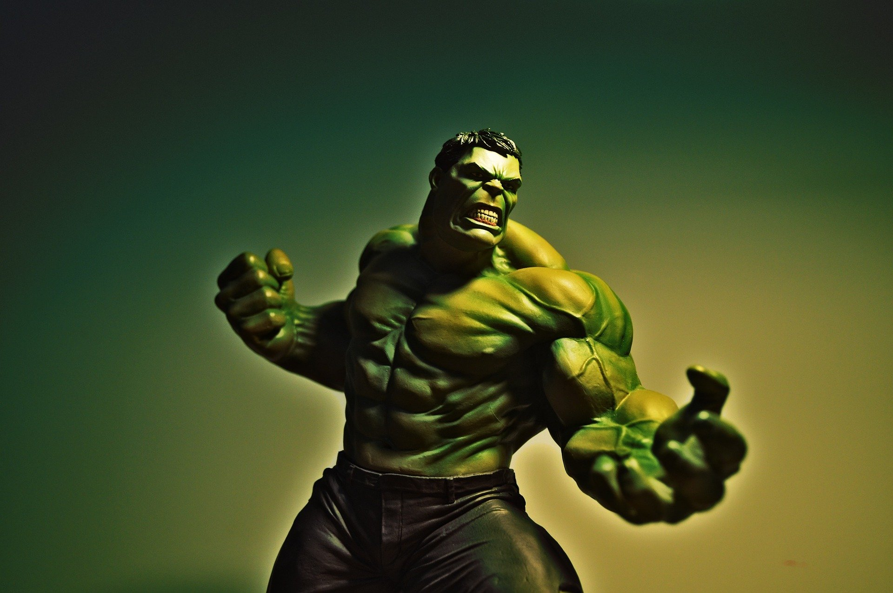
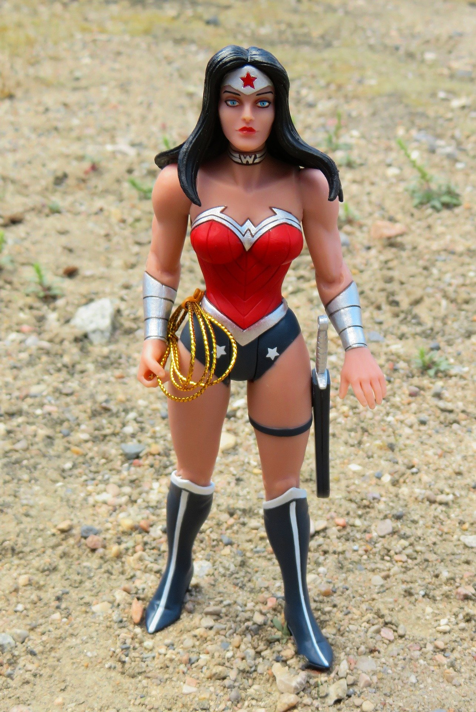
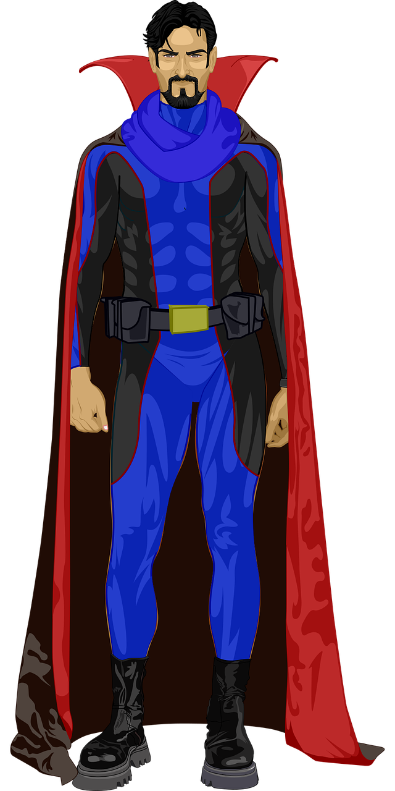
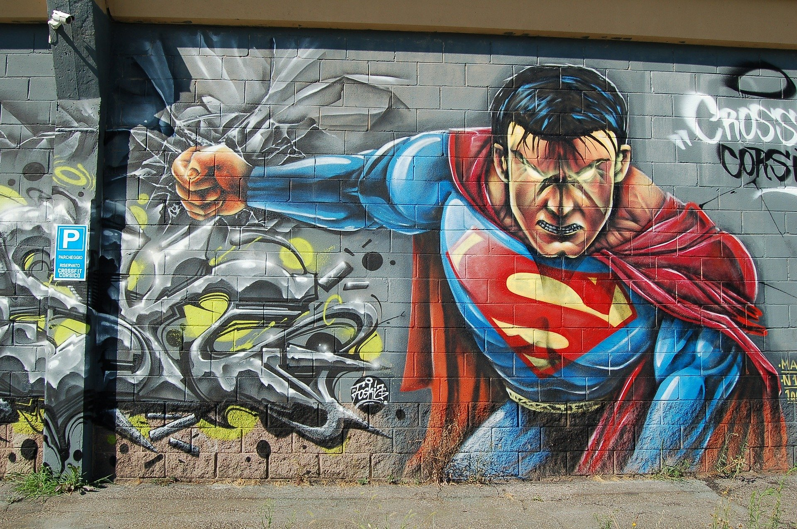
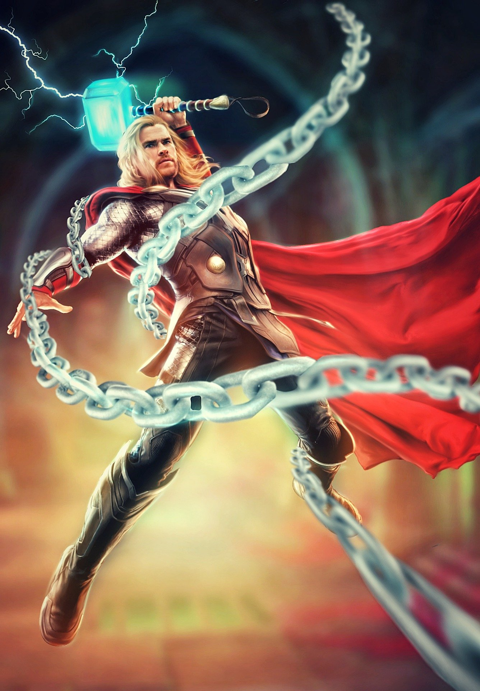

Superheros Marvel and DC
| Name: |
Alias: |
Image: |
Superpower: |
Weakness: |
| Hulk or Bruce Banner |
Green Scar,
Green King,
Green One,
Eye of Rage,
Holku,
Sakaarson.
Two-Minds,
World Breaker |
 |
Superhuman Strenth,
Superhuman Leaps,
Immunity to all diseases and viruses,
Resistance to Psychic Control,
Underwater breathing,
Astral form perception,
Manuipulation of energy and radaitons such as gamma,
Regeneration of his physcal body,
Superhuman speed,
Superhuman Stamina,
Superhuman Durability,
Doesnt need food or water,
Ages at a slower rate |
Reality warping such as Thano's glove,
Matter manipulation such as Docter Strange,
Cosmic Projection,
Himself |
| Wonder Woman or Diana Prince |
God Killer,
Diana of Themyscira,
Goddess,
Princess Diana,
Warrior Princess,
Young Woman,
Child,
Woman of Wonder,
Mysterious Female Savior,
Amazonian Warrior |
 |
Divine Empowwerment(Power given from the olyimpian gods),
Superhuman Strength,
Superhuman Durability,
Flight,
Superhuman Speed,
Superhuman Reflexes,
Superhuman Agility,
Superhuman Stamina,
Enhanced Healing,
Oneness With Fire(The power to know the truth),
Empathy,
Annimal Empathy,
Enhanced Senses,
Skilled fighter with weapons and to top it all off she has a enchanted rope,
Master technican, |
Bound to the lasso for life(Cant just throw it away, and she cant lie),
Naivety,
Poison and Gas,
Guns,
Aging,
In the comics men specifically who bondage her bracelts makes her powers fade for some reason
|
| Doctor Strange or Dr. Stephen Vincent Strange |
Doctor Strange,
Master of the Mystic Arts,
Dr. Strange |
 |
Sorcerer that can cast a varity of spells,
Infinite Longevity(Doesnt age and cant be killed by disease),
Can destroy Moons and planets,
Mystic Bolts,
Astral Projection,
Banishmnet to another realm/dimension,
Conjures Matter and energy,
Transmutation(Turn something into something else),
Telepathy,
Telekinesis,
Flight,
Protective Shields,
Hypnotism,
Illusions,
Intangibility(Fancy word for invisibility while phasing through matter)
Time manipulation,
Teleportaion,
Dimensional Travel,
Universal Awareness(He knows where and when a star expoldes for example) |
Basically human without magic so he dies anyway a normal human would exculding Aging,
Other magic and spells he has no knowledge of,
Some of his magic and spells require relics and special artifacts,
|
| Superman or Kal-El (Birth Name) or Clark Joseph Kent (Legal Name) |
Aksel,
Chaz Donen,
God of Strength,
Jon Clark,
Parallax,
Yellow Lantern,
Superman Blue,
Superboy,
Man of Steel |
 |
Kryptonian Physiology,
Solar Energy Absorbtion,
Superhuman Strength,
Shockwave Projection(Such as clapping his hands and sending out a wave),
Superhuman Speed,
Molecular Acceleration(He can vibrate his atoms to go into the space between space),
He can phase through objects,
Time travel,
Vortex creation,
Superhuman Agility,
Superhuman Reflexes,
Superhuman Stamina,
Superhuman Senses,
Electromagnetic-Spectrum Vision,
Microscopic Vision,
Infrared Vision,
Telescopic Vision,
X-ray Vision,
Flight,
Laser beams out his eyes,
Superflare(Combines all his eneergy into a solar explosion hence the name yellow lantern),
Interstellar travel,
Invulnerability,
Longevity as long as he maintians his solar energy,
Super-breath(Creates hurricane force winds that chill),
Doesnt need food or water self sutainable,
Soul energy absorption(bsorb the souls of other beings empowering him evenm further),
Genius
|
Kryptonite,
Magic,
Solar energy dependencey,
Sensory Overload(A flashbang would cause pain due to his enhanced hearing and sight)
|
| Thor Odinson or Donald Blake(Legal Name) |
God of Thunder,
Prince of Thunder,
Prince of Asgard,
Heir to the Throne of Asgard,
Son of Odin,
Odinborn,
Odinson,
Little Princess,
Crazy Homeless Person,
Donny,
The Mighty Thor,
The Demigod,
The Big Dude with a Hammer,
Witless Oaf,
The Future King of Asgard,
God,
The Man Who Wouldn't Be King,
First Son of Odin,
Blondie,
The Big Blonde Dude with the Hammer,
The God From Space,
Lord of Thunder,
Sparkles,
Defender,
Contender,
Baby Man,
Tiny Avenger,
Lazy Butt,
Banner's Friend,
Couple of Hot-Headed Fools (with Hulk),
Smoldering Fire,
Seductive Lord of Thunder,
Seductive God of Thunder,
Strongest Avenger,
God of Hammers,
The Gypsy,
Handsome Muscular Man,
Pirate Angel,
God-Man |
 |
Asgardian Physiology,
Superhuman Strength,
Superhuman Durability
Superhuman Speed
Superhuman Agility
Superhuman Stamina
Superhuman Reflexes
Regeneration is increased
He ages as a rate slower than humans(He is from a different planet)
Elemental manipulation
Weather manipulation
Electricity manipulation
Flight
Teleportaion
Interstellar travel
He can summon a hammer or any weapon created in the cosmos from literally anywhere
|
Galatic weaponery(However a human sniper couldnt kill him only knocked him out)
Ragnarok beings such as his sister
Magic
Certain emotions such as feeling unworthy and warriors madness
|